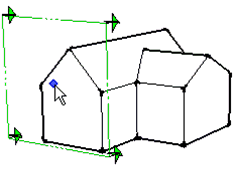

Section Plane Tool
Create section cuts effects enabling you to view geometry within a model.
Tool Operation
Click on a face to cut create a Section Plane entity and resulting section cut effect.
Modifier Keys
Shift (before first click) = Lock tool to current orientation
Advanced Operations
Manipulating Section Planes
Creating Grouped Section Slices
Using Sections with Scenes
Aligning Your View